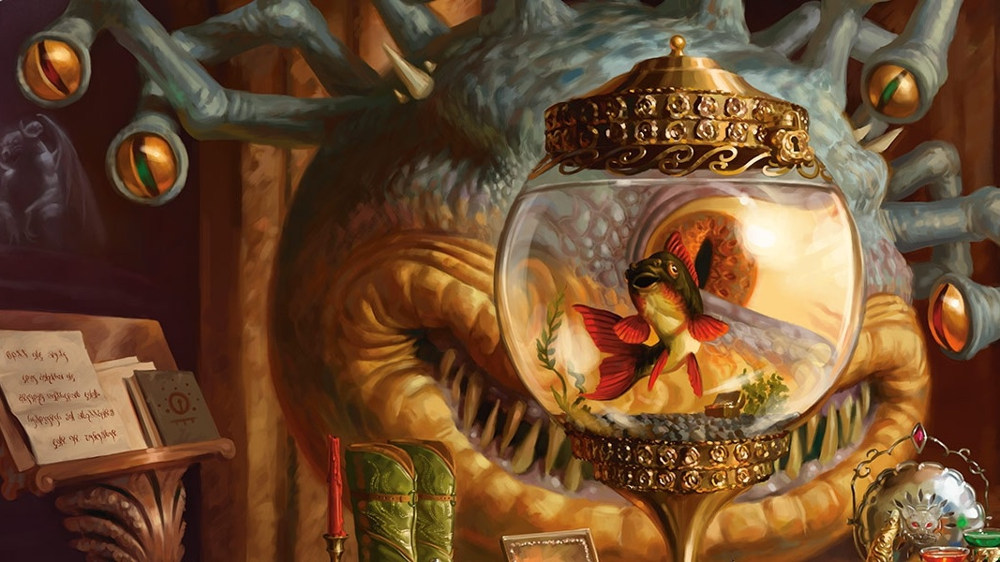
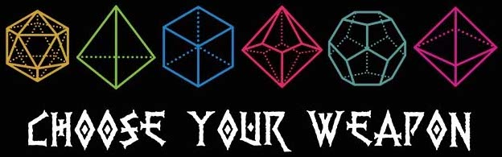

Rules of Dungeons and Dragons
How To Play
Even though there are "rules" for D&D there really is not anything too specific you have to follow so play how you want and if you have questions refer back to the book. First the DM or Dungeon Master describes the enviroment that they came up with beforehand. They tell you were you are and what is around you. Mainly how many doors there are, what is on the table, who is in the place, and so on. Next the players will describe what they want to do, this could either be one person making all the decisions or each individual player saying what they want to do. Everyone can do whatever they want to do, and the DM will describe things along the way. Then after someone makes a decision the DM will go off of that and eventually have them make more decisions. You are creating your own story but also going off of what the DM has curated for the day. While you are playing sometimes the DM will use props, music or sounds to get you more into the story. Also the DM is as much a character as you are. They make up voices for characters they want to portray and even names them. The game should run pretty smoothly especially if the person who is DMing knows what they are doing. It is a create your own adventure so have fun with it and try not to take it too seriously.

While playing the game you will be using dice to make decisions, figure out if you can make certain moves or not and also what spot you are in when you are battling. There are 7 dice in total, but you can have as many of those individual dice as you want. There is a d4, d6, d8, d10, d12, d20 and d100. The main dice you will use is the d20. Need to make a decision for stealing a journal out of someones satchel? Or who is going to try to kill an orc lord first? Then you will end up rolling the d20 to determine whether it was a success or a failure. After rolling you will then add any modifiers to your dice. And then you will add any bonuses or penalties that come from the situation. Then sometimes especially during a battle the DM will roll a dice to help determine if you pass or fail.
